3.7 Procedimentos de comparação múltipla
Contrastes ortogonais planejados a priori resolvem o problema de forma elegante quando o número de perguntas é pequeno e conhecido antes da coleta de dados. Mas frequentemente queremos comparar todos os pares de médias, ou comparar cada tratamento contra um grupo controle, sem ter decidido de antemão exatamente quais comparações importam. Fazer isso com testes \(t\) repetidos, um por par, é perigoso: com \(t=4\) grupos há \(\binom{4}{2}=6\) comparações possíveis, e mesmo que \(H_0\) seja verdadeira em todas elas, se os seis testes fossem independentes a probabilidade de pelo menos um falso positivo ao nível nominal \(\alpha=0{,}05\) por teste seria
\[P(\text{pelo menos 1 falso positivo}) = 1 - (1-\alpha)^{6} \approx 1 - 0{,}95^6 \approx 0{,}26,\]
mais de cinco vezes o nível nominal. Como os seis testes compartilham médias e o mesmo \(QME\), eles não são independentes e o valor exato é um pouco menor — a simulação da Seção 3.7.17 dá cerca de 19% —, mas a ordem de grandeza do problema é essa. Duas taxas de erro precisam ser distinguidas:
| Taxa de erro | Definição | Controlada por |
|---|---|---|
| por comparação | \(P(\text{erro tipo I em um teste})\) | LSD (least significant difference) de Fisher, testes \(t\) repetidos |
| por família (FWER, family-wise error rate) | \(P(\text{pelo menos 1 erro tipo I na família})\) | Tukey, Dunnett, Bonferroni, Scheffé |
Essa inflação da taxa de erro por família (family-wise error rate, FWER) é o problema que os procedimentos a seguir resolvem, cada um com um compromisso diferente entre conservadorismo e poder (Hsu, 1996).
3.7.1 O que significa controlar a taxa de erro por família
A sigla merece uma explicação sem fórmulas antes de qualquer procedimento. A família é o conjunto de todas as comparações que serão feitas e relatadas sobre um experimento — no exemplo de scripts, com a pergunta “quais pares diferem?”, os seis pares. A família erra quando pelo menos uma dessas comparações declara uma diferença que não existe; não importa qual, nem quantas. O FWER é a probabilidade desse evento,
\[\text{FWER} = P(A_1 \cup A_2 \cup \cdots \cup A_m), \qquad A_k = \{\text{falso positivo na } k\text{-ésima comparação}\}.\]
Uma analogia ajuda: uma casa com seis cômodos, cada um com um detector de fumaça que dispara à toa em 5% das noites. Cada detector, isoladamente, é bom; mas a chance de a casa ser acordada sem incêndio numa noite qualquer é de cerca de \(1-0{,}95^6 \approx 26\%\). Controlar o FWER em 5% é garantir que, em 95% dos experimentos, nenhuma das comparações relatadas seja um alarme falso — uma garantia sobre o relatório inteiro, não sobre cada linha dele.
A Figura 3.21 torna isso visível. Simulamos 100 experimentos com o desenho do exemplo (\(t=4\), \(n=10\), \(\sigma=70\) ms) em que as quatro médias verdadeiras são iguais, e em cada um comparamos os seis pares por testes \(t\) ao nível de 5% e por Tukey.
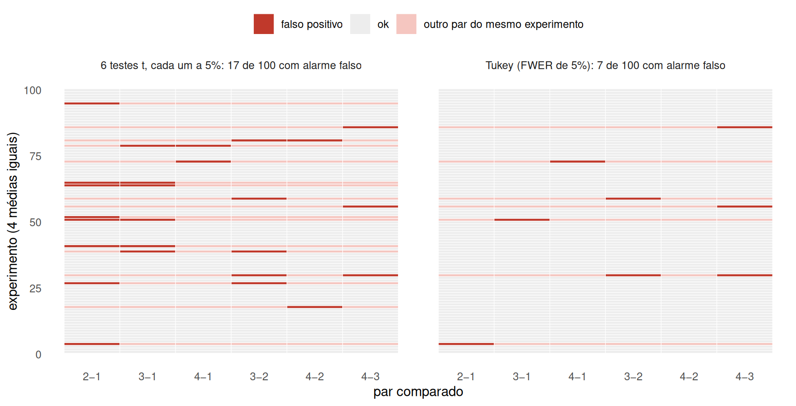
Figura 3.21: Cem experimentos simulados sem efeito nenhum (linhas) e os seis pares comparados em cada um (colunas). Vermelho: par declarado diferente (falso positivo); rosa: os demais pares de um experimento que teve algum falso positivo. Esquerda: seis testes t, cada um a 5%; direita: Tukey.
Cada casa vermelha é rara — cerca de 5% das casas da esquerda, como prometido por cada teste \(t\). Mas cada linha com alguma casa vermelha não é: 17 dos 100 experimentos produziriam pelo menos uma “descoberta” falsa com testes \(t\) (o valor esperado é perto de 20%), contra 7 com Tukey (esperado: 5%). E o problema cresce rapidamente com o número de tratamentos (Figura 3.22): com 10 tratamentos e 45 pares, achar alguma diferença por acaso é quase certo.
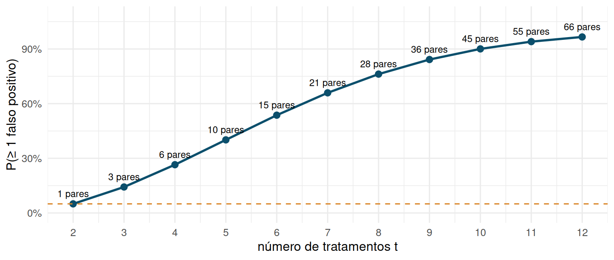
Figura 3.22: Probabilidade de pelo menos um falso positivo ao fazer todos os pares com testes t a 5%, tratados como independentes, em função do número de tratamentos; o rótulo dá o número de pares e a linha tracejada marca 5%.
Há dois sentidos de “controlar”. O controle fraco vale só quando todas as médias são iguais; o controle forte vale qualquer que seja o padrão de médias iguais e diferentes — que é o caso relevante, porque, depois de rejeitar o \(F\) global, sabemos justamente que nem todas são iguais. Tukey, Dunnett, Bonferroni e Scheffé controlam o FWER no sentido forte; o LSD protegido e o SNK (Student-Newman-Keuls), só no fraco; o Duncan, em nenhum dos dois. A Seção 3.7.17 mostra isso numa simulação com os dois cenários.
3.7.2 O perigo do “data snooping”
Antes de listar os procedimentos, vale nomear explicitamente o problema mais sutil que eles resolvem — não apenas “muitos testes \(t\)”, mas a prática de decidir qual comparação fazer depois de já ter visto os dados. O método científico usual segue a ordem hipótese \(\to\) delineamento \(\to\) coleta \(\to\) análise; o “data snooping” (“espionagem de dados”, ou garimpagem de hipóteses) inverte essa ordem: primeiro se exploram os dados em busca de qualquer padrão que pareça interessante, e só então se formula — e se “testa” — uma hipótese construída sob medida para aquele padrão, usando os mesmos dados que a sugeriram.
O problema não é hipotético. Suponha \(t\) grupos cujas médias populacionais são, na verdade, idênticas. Por puro ruído amostral, as \(t\) médias observadas nunca serão exatamente iguais; haverá sempre um par de médias mais distante entre si do que os demais. Se o pesquisador percorre os dados à procura do par mais discrepante e só então formula a hipótese “esses dois grupos diferem”, o teste \(t\) usual sobre esse par específico quase certamente rejeitará \(H_0\) com frequência bem maior que \(\alpha\) — não porque exista um efeito real, mas porque escolher o maior de vários desvios aleatórios e testá-lo como se fosse a única comparação planejada ignora toda a variabilidade dos \(\binom{t}{2}-1\) pares que não foram escolhidos. A analogia usual é a do atirador que dispara uma flecha na parede e só depois desenha o alvo ao redor do ponto de impacto: ele acerta o “alvo” sempre, mas isso nada prova sobre sua pontaria.
Os procedimentos planejados a priori (contrastes ortogonais da Seção 3.6, Tukey, Dunnett, Bonferroni) protegem apenas o conjunto de comparações especificado antes de examinar os dados — nenhum deles oferece garantia alguma sobre um contraste “descoberto” depois. O método de Scheffé, a seguir, é a resposta formal a essa lacuna: ele protege simultaneamente todo o espaço infinito de contrastes lineares possíveis, de modo que, mesmo que o pesquisador escolha o contraste mais favorável depois de olhar os dados, o FWER continua controlado em \(\alpha\).
3.7.3 A estrutura comum: a diferença mínima significativa
Com dados balanceados (\(n_i = n\)), quase todos os procedimentos par a par têm a mesma forma: declaram \(\mu_i \ne \mu_j\) quando a diferença observada \(|\bar y_{i\cdot} - \bar y_{j\cdot}|\) supera uma diferença mínima significativa (DMS), que é um multiplicador vezes um erro-padrão. O que distingue os procedimentos é apenas o multiplicador — e, com ele, a garantia oferecida. Com \(\nu = gl_{\text{erro}}\):
| Procedimento | DMS | Controla |
|---|---|---|
| LSD de Fisher | \(t_{\alpha/2,\nu}\sqrt{2QME/n}\) | taxa por comparação |
| Bonferroni (\(m\) comparações) | \(t_{\alpha/(2m),\nu}\sqrt{2QME/n}\) | FWER, de forma conservadora |
| Tukey HSD (honestly significant difference) | \(q_{\alpha;\,t,\nu}\sqrt{QME/n}\) | FWER, todos os pares |
| Dunnett | \(d_{\alpha;\,t-1,\nu}\sqrt{2QME/n}\) | FWER, cada tratamento vs. controle |
| Scheffé | \(\sqrt{(t-1)F_{\alpha;\,t-1,\nu}}\,\sqrt{2QME/n}\) | FWER, todo contraste |
| SNK | \(q_{\alpha;\,p,\nu}\sqrt{QME/n}\), \(p\) = amplitude | FWER só sob \(H_0\) completa |
| Duncan | \(q_{\alpha_p;\,p,\nu}\sqrt{QME/n}\), \(\alpha_p = 1-(1-\alpha)^{p-1}\) | não controla o FWER |
Ver os procedimentos como réguas de comprimentos diferentes, aplicadas às mesmas diferenças, é a forma mais útil de compará-los — e é o que faremos com os dados na Seção 3.7.13.
3.7.4 LSD de Fisher
O procedimento mais antigo é a least significant difference de Fisher (Fisher, 1935b): o teste \(t\) de duas médias, usando o \(QME\) da ANOVA como estimativa de \(\sigma^2\) (o que dá mais graus de liberdade que um teste \(t\) com só os dois grupos). Controla apenas a taxa de erro por comparação. Na versão protegida, o LSD só é aplicado se o \(F\) global rejeitar \(H_0\); isso controla o FWER quando todas as médias são iguais (porque então só se chega aos pares com probabilidade \(\alpha\)), mas não quando apenas algumas são — um ponto que a simulação da Seção 3.7.17 torna concreto.
3.7.5 Método de Scheffé
Controla o FWER para qualquer contraste que se queira testar, incluindo contrastes definidos depois de examinar os dados (comparações não planejadas, ou “garimpadas”, na linha da Seção 3.7.2) — é o procedimento mais geral e, por isso, o mais conservador. Rejeita-se \(H_0: L=0\) se
\[\frac{SQ_L}{QME} > (t-1)\, F_{\alpha;\, t-1,\, gl_{\text{erro}}}.\]
De onde vem o fator \((t-1)\)? Para dados balanceados e qualquer contraste (\(\sum c_i = 0\)), a desigualdade de Cauchy-Schwarz dá
\[\hat L^2 = \Big(\sum_{i=1}^t c_i(\bar y_{i\cdot} - \bar y_{\cdot\cdot})\Big)^2 \le \sum_{i=1}^t c_i^2 \cdot \sum_{i=1}^t (\bar y_{i\cdot}-\bar y_{\cdot\cdot})^2 \quad\Longrightarrow\quad SQ_L = \frac{n\hat L^2}{\sum_i c_i^2} \le n\sum_{i=1}^t(\bar y_{i\cdot}-\bar y_{\cdot\cdot})^2 = SQ_{\text{Trat}},\]
em que a primeira igualdade usa \(\sum c_i = 0\) para subtrair \(\bar y_{\cdot\cdot}\) de graça. Logo, o maior \(F\) de contraste possível — o do contraste mais favorável, escolhido depois de ver os dados — é
\[\max_{\mathbf c}\ \frac{SQ_L}{QME} = \frac{SQ_{\text{Trat}}}{QME} = (t-1)\,F_{\text{obs}},\]
atingido pelo contraste com \(c_i \propto \bar y_{i\cdot} - \bar y_{\cdot\cdot}\). (Sob uma hipótese geral, aplica-se o mesmo argumento a \(\bar y_{i\cdot} - \mu_i\).) Comparar cada \(SQ_L/QME\) com \((t-1)F_{\alpha;t-1,\nu}\) equivale, portanto, a exigir que o contraste supere o que o maior de todos os contrastes atingiria por acaso com probabilidade \(\alpha\) — e o FWER fica exatamente em \(\alpha\) sobre uma família infinita (Scheffé, 1959). Duas consequências: nenhum contraste é significativo por Scheffé se o \(F\) global não for (o Scheffé é o teste \(F\) global “desdobrado” em direções); e é esse fator extra que torna Scheffé a “licença para bisbilhotar os dados” de forma estatisticamente honesta.
3.7.6 Método de Bonferroni
O método de Bonferroni (1936) divide o nível de significância global \(\alpha\) igualmente entre as \(m\) comparações planejadas: cada teste individual é avaliado contra \(\alpha/m\) (equivalentemente, cada p-valor é multiplicado por \(m\)). A justificativa é a desigualdade de Boole: se \(A_k\) é o evento “erro tipo I na \(k\)-ésima comparação”,
\[\text{FWER} = P\Big(\bigcup_{k=1}^m A_k\Big) \le \sum_{k=1}^m P(A_k) = m\cdot\frac{\alpha}{m} = \alpha.\]
É simples, aplica-se a qualquer conjunto pré-especificado de comparações (não só pares), mas é conservador quando \(m\) é grande ou quando as comparações são correlacionadas — a desigualdade de Boole é estrita sempre que os eventos \(A_k\) se intersectam, o que ocorre sempre que as comparações compartilham médias e o \(QME\).
3.7.7 Tukey HSD (honestly significant difference)
Desenhado especificamente para todas as comparações par a par entre \(t\) médias, usa a distribuição da amplitude estudentizada (studentized range) em vez da distribuição \(t\) (Tukey, 1949a). Com dados balanceados, a estatística
\[Q = \frac{\max_i(\bar y_{i\cdot}-\mu_i) - \min_i(\bar y_{i\cdot}-\mu_i)}{\sqrt{QME/n}} \sim q_{t,\nu}\]
tem distribuição tabelada (é a amplitude de \(t\) normais independentes dividida por um desvio-padrão independente com \(\nu\) gl). O argumento de Tukey é de uma linha: se a maior das \(\binom t2\) diferenças padronizadas fica abaixo de \(q_{\alpha;t,\nu}\), todas as outras também ficam. Logo \(P(\text{nenhum falso positivo}) = P(Q \le q_{\alpha;t,\nu}) = 1-\alpha\) — o FWER é exatamente \(\alpha\) para a família de todos os pares. É por isso que Tukey é mais poderoso que Bonferroni nessa família: Bonferroni usa uma desigualdade, Tukey usa a distribuição exata do máximo. É o procedimento padrão quando o objetivo é “comparar tudo com tudo” sem um grupo controle privilegiado.
3.7.8 Comparação com um grupo controle: Dunnett
Quando o interesse não é comparar todos os pares, mas sim cada tratamento contra um único grupo controle (como “Nenhum” no exemplo de scripts), o número de comparações cai de \(\binom{t}{2}\) para \(t-1\), e essas comparações são correlacionadas entre si (todas compartilham o mesmo grupo controle; com \(n\) iguais a correlação entre duas delas é \(1/2\)). O teste de Dunnett usa a distribuição conjunta dessas \(t-1\) estatísticas \(t\) (uma \(t\) multivariada) para obter o valor crítico \(d_{\alpha;t-1,\nu}\), sendo mais poderoso que Tukey ou Bonferroni para esse propósito específico (Dunnett, 1955). Admite também a versão unilateral, quando a pergunta tem direção (“o tratamento piora?”) — desde que a direção seja fixada no protocolo, antes dos dados.
3.7.9 Teste de amplitude múltipla de Duncan
Todos os procedimentos anteriores usam um único valor crítico para julgar qualquer par de médias. O teste de Duncan (Duncan, 1955) rompe com essa ideia: ordena as \(t\) médias amostrais, \(\bar y_{(1)} \le \cdots \le \bar y_{(t)}\), e define a amplitude \(p\) de uma comparação como o número de médias ordenadas que ela abrange (\(p=2\) para médias adjacentes, \(p=t\) para a maior contra a menor). Para cada amplitude \(p = 2, \ldots, t\), calcula-se um valor crítico próprio — a amplitude mínima significativa
\[R_p = r_{\alpha,\,p,\,gl_{\text{erro}}} \sqrt{\frac{QME}{n}},\]
em que \(r_{\alpha,p,\nu} = q_{\alpha_p;\,p,\nu}\) vem de uma tabela específica de Duncan
(implementada, por exemplo, em agricolae::duncan.test()) e cresce com \(p\):
\(R_2 < R_3 < \cdots < R_t\). A diferença \(\bar y_{(j)} - \bar y_{(i)}\) é declarada significativa se
exceder \(R_{j-i+1}\) — médias adjacentes (\(p=2\)) só precisam superar o menor valor crítico da lista,
enquanto a diferença entre a maior e a menor média precisa superar o maior.
Essa escala móvel equivale a proteger cada amplitude \(p\) com um nível \(\alpha_p = 1 - (1-\alpha)^{p-1}\), que cresce com \(p\) em vez de permanecer fixo em \(\alpha\) — ao contrário de Tukey, que usa o mesmo nível \(\alpha\) para toda comparação par a par, qualquer que seja sua amplitude. Com \(\alpha = 0{,}05\) e \(t=4\), \(\alpha_4 = 1-0{,}95^3 \approx 0{,}143\): sob \(H_0\) completa, a chance de o Duncan declarar alguma diferença é de 14%, não de 5%. Na prática, isso torna Duncan sistematicamente mais liberal (mais poder, mais comparações declaradas significativas) do que Tukey, mas ao custo de não controlar o FWER no nível nominal \(\alpha\) para o conjunto de comparações como um todo. Por essa razão, seu uso vem sendo desaconselhado na literatura em favor de procedimentos que controlam o FWER de forma rigorosa (Tukey para pares, Dunnett contra um controle); ainda assim, permanece comum em periódicos de ciências agrárias, o que torna sua interpretação correta — inclusive de suas limitações — relevante para quem for ler ou revisar esse tipo de trabalho.
3.7.10 Student-Newman-Keuls (SNK)
O SNK (Keuls, 1952; Newman, 1939) tem a mesma estrutura em etapas de Duncan, mas usa o nível \(\alpha\) fixo em cada amplitude: \(R_p = q_{\alpha;\,p,\nu}\sqrt{QME/n}\). Para \(p = t\) ele coincide com Tukey; para \(p=2\), com Duncan e com o LSD. Fica, portanto, entre os dois. O SNK controla o FWER sob \(H_0\) completa (todas as médias iguais), porque então tudo depende do primeiro teste, o da amplitude \(t\), feito ao nível \(\alpha\). Mas sob \(H_0\) parcial — algumas médias iguais, outras não — os pares de médias iguais que ficam vizinhos depois do ordenamento são testados, cada um, ao nível \(\alpha\), e o FWER cresce com o número desses pares.
3.7.11 O teste de Duncan passo a passo, com dados reais
A descrição do Duncan acima é compacta demais para quem o vê pela primeira vez. Esta subseção o executa inteiro, passo a passo e com gráficos, sobre os dados reais de fertilizantes em feijão da Seção 3.2.7 — escolhidos porque, neles, Duncan e Tukey discordam, o que torna visível o efeito de cada escolha do procedimento. Em uma frase, o Duncan ordena as médias e compara cada par com uma régua que depende de quantas médias o par abrange, começando pelo par mais afastado e só descendo enquanto as comparações maiores forem significativas.
| Parcela | F1 | F2 | F3 | F4 |
|---|---|---|---|---|
| 1 | 5.91 | 6.81 | 1.69 | 8.31 |
| 2 | 3.76 | 7.95 | 5.69 | 8.46 |
| 3 | 4.04 | 6.75 | 7.18 | 8.51 |
| 4 | 5.37 | 7.57 | 5.70 | 9.59 |
| 5 | 5.68 | 7.51 | 7.47 | 11.07 |
A ANOVA da Seção 3.2.7 deu \(F = 9{,}21\) com (3, 16) gl e \(QME = 1{,}982\). As médias são F1 = 4,952, F2 = 7,318, F3 = 5,546 e F4 = 9,188 kg, e o erro-padrão de uma média é \(\sqrt{QME/n} = \sqrt{1{,}982/5} = 0{,}630\) kg — a unidade em que todas as réguas desta subseção são expressas.
Passo 1 — ordenar. A Figura 3.23 põe as quatro médias no eixo da produção, em ordem crescente, com a posição de cada uma entre parênteses. A ordem não é a dos rótulos: F3 vem antes de F2. As distâncias entre vizinhas são 0,59 (F3 − F1), 1,77 (F2 − F3) e 1,87 kg (F4 − F2).
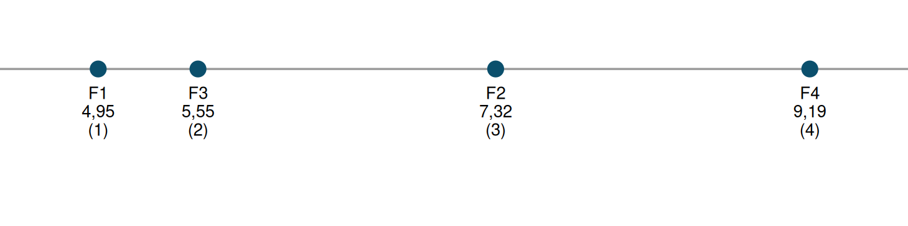
Figura 3.23: As quatro médias de produção de feijão (kg) ordenadas no eixo da resposta; entre parênteses, a posição de cada uma na ordenação.
Passo 2 — contar a amplitude. A amplitude \(p\) de um par é o número de médias ordenadas que ele abrange, incluindo as duas pontas. Na Figura 3.24 cada par é um arco, com altura e cor dadas pela amplitude: o único par de amplitude 4 é F4 − F1 (maior contra menor); os de amplitude 3, F2 − F1 e F4 − F3, têm uma média entre as pontas; os três de amplitude 2 são vizinhos.
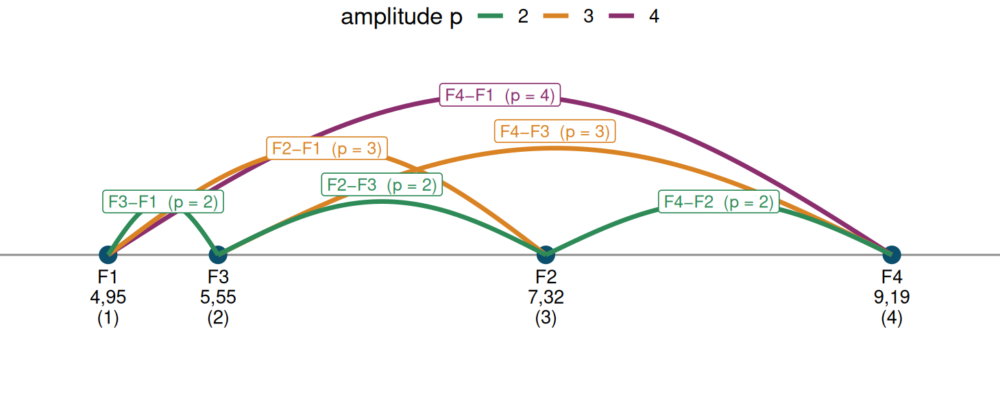
Figura 3.24: Os seis pares de médias como arcos sobre o eixo das médias ordenadas; altura e cor indicam a amplitude p do par (2: vizinhas; 3: uma média entre as pontas; 4: maior contra menor).
Por que a régua deveria crescer com \(p\). A Figura 3.25 responde com uma simulação: sorteamos \(p\) médias sem efeito nenhum e medimos a distância entre a maior e a menor, em erros-padrão. Com mais médias, os extremos se afastam só por acaso; o percentil 95% de cada distribuição — 3,00, 3,65 e 4,08 para \(p = 2, 3, 4\) — é exatamente o valor tabelado \(q_{0,05;\,p,16}\) da amplitude estudentizada. Daí a ideia dos procedimentos em etapas: exigir mais de um par que abrange mais médias, porque ele “tem mais chance” de parecer afastado sem ser.
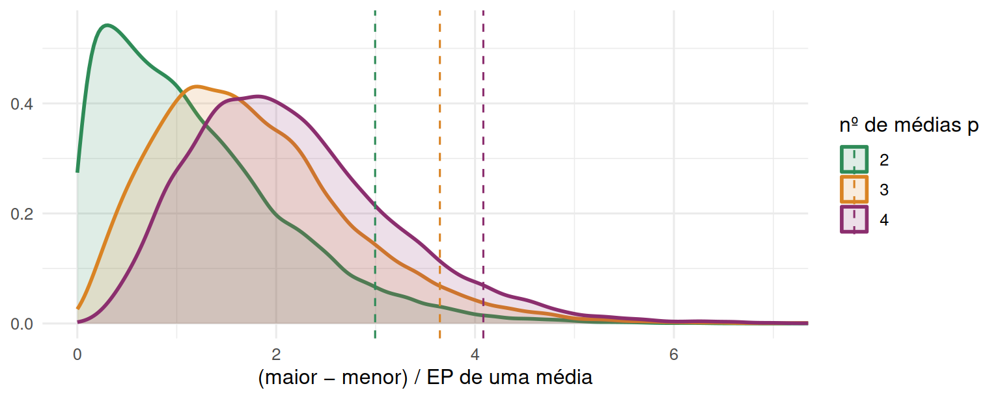
Figura 3.25: Distribuição simulada da distância entre a maior e a menor de p médias, em erros-padrão, quando todas as médias verdadeiras são iguais (16 gl para o erro); as linhas tracejadas marcam o percentil 95% de cada distribuição.
Passo 3 — uma régua por amplitude. Para cada \(p\), \(R_p = r_p\sqrt{QME/n}\), em que o \(r_p\) de
Duncan é o quantil da amplitude estudentizada no nível \(1-\alpha_p\), com \(\alpha_p = 1-(1-\alpha)^{p-1}\)
(no R, qtukey((1 - 0.05)^(p - 1), p, gl)). A Tabela 3.19 traz as réguas de
Duncan, SNK e Tukey, e a Figura 3.26 as compara.
| Amplitude p | Nível de proteção αp | r_p (Duncan) | R_p Duncan | R_p SNK | Tukey (fixa) |
|---|---|---|---|---|---|
| 2 | 5,00% | 2,998 | 1,887 | 1,887 | 2,547 |
| 3 | 9,75% | 3,144 | 1,979 | 2,297 | 2,547 |
| 4 | 14,26% | 3,235 | 2,036 | 2,547 | 2,547 |
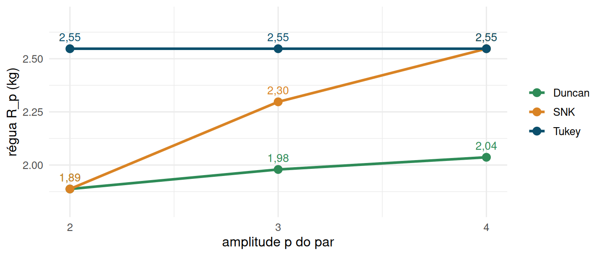
Figura 3.26: Régua (diferença mínima significativa, em kg) de Duncan, SNK e Tukey em função da amplitude p do par, para os dados de feijão.
Para pares vizinhos (\(p=2\)), Duncan, SNK e LSD usam a mesma régua. Com \(p\) crescente, o Duncan cresce devagar (de 1,89 a 2,04 kg), porque relaxa o nível (\(\alpha_p\) sobe de 5% para 14,3%); o SNK cresce mais, até alcançar Tukey em \(p=t\); e Tukey usa a régua máxima para todos os pares. É nos pares de amplitude intermediária e grande que o Duncan se afasta do Tukey.
Passo 4 — testar de cima para baixo. A Figura 3.27 mostra as três etapas. Na primeira (\(p=4\)), \(\bar y_{F4} - \bar y_{F1} = 4{,}24 > R_4 = 2{,}04\): F4 e F1 diferem, e isso libera para teste os dois pares de amplitude 3 que ficam “dentro” desse arco. Na segunda (\(p=3\)), F2 − F1 = 2,37 e F4 − F3 = 3,64 são comparados com \(R_3 = 1{,}98\), e os dois diferem. Na terceira (\(p=2\)), os três pares vizinhos são comparados com \(R_2 = 1{,}89\): F3 − F1 = 0,59, F2 − F3 = 1,77 e F4 − F2 = 1,870; nenhum difere. O último fica a apenas 0,017 kg da régua — uma decisão frágil, que uma única parcela poderia inverter, e que por isso deve ser reportada com a diferença e seu intervalo, não só com “=”.
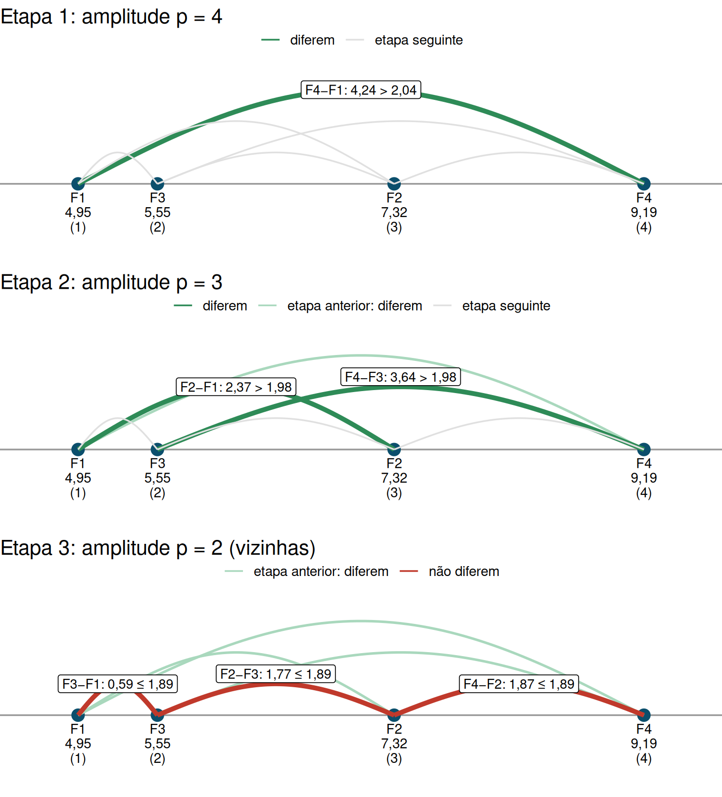
Figura 3.27: As três etapas do teste de Duncan nos dados de feijão. Em cada painel, os arcos da etapa corrente estão em destaque (verde: diferença significativa; vermelho: não significativa) com a diferença observada e a régua; arcos de etapas anteriores aparecem claros, coloridos pelo resultado, e os das etapas seguintes em cinza.
A regra de coerência em ação. Nos dados reais, todas as comparações das etapas 1 e 2 foram significativas, e a regra de coerência não chegou a atuar. Para vê-la funcionar, imagine o mesmo experimento com as mesmas médias, mas muito mais ruidoso, com \(QME = 9\) (Figura 3.28). Agora a comparação de ponta a ponta já falha, e os pares de amplitude 3 e 2 nem são testados: se nem as médias mais afastadas diferem, nenhum par contido entre elas pode diferir. É essa regra que impede o procedimento de produzir a contradição “F1 e F4 são iguais, mas F1 e F2 diferem”.
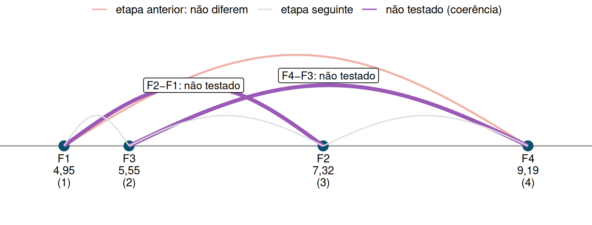
Figura 3.28: Cenário hipotético com as mesmas médias de feijão e QME = 9: a comparação de amplitude 4 não é significativa (arco claro avermelhado) e, pela regra de coerência, os pares de amplitude 3 (roxo) e 2 não são testados.
Passo 5 — das decisões aos traços e às letras. O resultado se resume num diagrama de traços (Figura 3.29): um traço sob um grupo de médias consecutivas indica que nenhum par dentro dele difere. Cada traço vira uma letra (a para o grupo que contém a maior média). Pelo Duncan, os grupos são {F1, F3}, {F3, F2} e {F2, F4}, donde F1 = c, F3 = bc, F2 = ab e F4 = a. Pelo Tukey, os grupos são {F1, F3, F2} e {F2, F4}, donde F1 = b, F3 = b, F2 = ab e F4 = a.
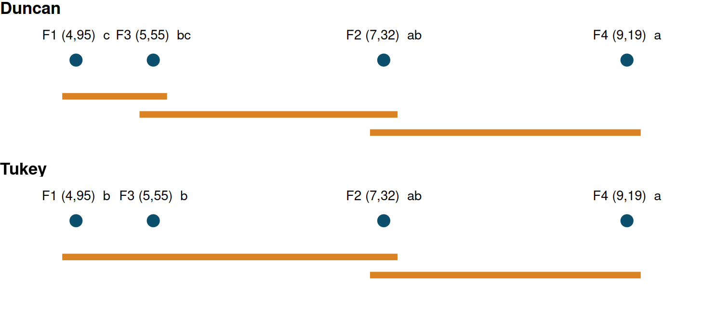
Figura 3.29: Diagrama de traços para os dados de feijão pelo Duncan (acima) e pelo Tukey (abaixo): médias ligadas por um mesmo traço não diferem pelo critério correspondente; ao lado de cada média, a letra resultante.
A conferência com o agricolae reproduz os valores de \(r_p\) e \(R_p\) e as letras; o que o pacote
não mostra é o caminho — as etapas e a regra de coerência —, que é justamente o que explica o
resultado:
dt <- agricolae::duncan.test(mod_feijao, "Fertilizante", console = FALSE)
dt$duncan # r_p ("Table") e R_p ("CriticalRange") para p = 2, 3, 4## Table CriticalRange
## 2 2.997999 1.887328
## 3 3.143802 1.979115
## 4 3.234945 2.036492## Producao groups
## F4 9.188 a
## F2 7.318 ab
## F3 5.546 bc
## F1 4.952 cOnde Duncan e Tukey discordam. O par F2 − F1, com 2,37 kg, é declarado diferente pelo Duncan e pelo SNK e não pelo Tukey, pelo Bonferroni nem pelo Scheffé (Figura 3.30). Os dados não mudaram; mudou a garantia pedida. O Duncan julga esse par com proteção \(\alpha_3 = 1-0{,}95^2 \approx 9{,}75\%\), e a família de comparações, sob \(H_0\) completa, com \(\alpha_4 \approx 14\%\).
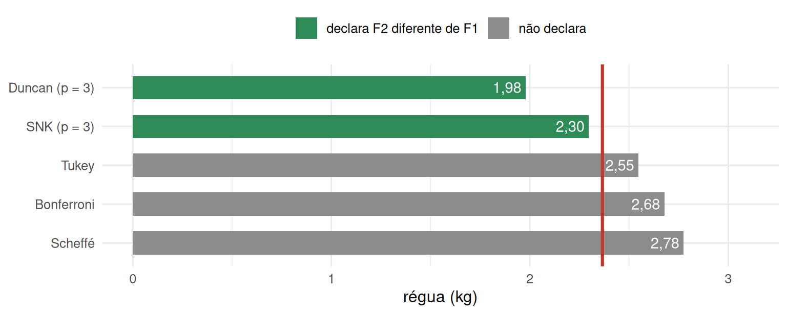
Figura 3.30: A diferença observada entre F2 e F1 (linha vermelha) contra a régua de cada procedimento: barras verdes são réguas menores que a diferença (o procedimento declara F2 diferente de F1), barras cinza, réguas maiores.
A leitura prática é a de sempre, agora com um exemplo concreto: o Duncan é uma ferramenta de
triagem — útil para apontar candidatos promissores para um próximo experimento —, mas uma
conclusão que vai virar recomendação a produtores (“F2 rende mais que F1”) precisa de um
procedimento que controle o FWER, como Tukey, ou Dunnett se houver uma testemunha. A função
passos_amplitude() de comparacoes_helpers.R, usada nas figuras desta subseção, devolve a tabela
completa de etapas para qualquer conjunto de médias, com metodo = "Duncan" ou "SNK".
3.7.12 A questão do ordenamento: procedimentos em etapas
Duncan e SNK dependem da ordem das médias observadas, e isso merece uma discussão própria, porque é onde mora tanto a sua lógica quanto o seu problema.
Por que faz sentido a régua depender da posição. Sob \(H_0\), a distância esperada entre o maior e o menor de \(p\) valores aleatórios cresce com \(p\). Uma diferença de 70 ms entre duas médias vizinhas na ordenação é, portanto, mais surpreendente do que a mesma diferença entre os extremos de quatro médias — os extremos estão longe “por construção”. Os procedimentos em etapas exigem mais das amplitudes maiores por essa razão.
A regra de coerência. O teste começa pela amplitude \(t\) (maior contra menor); uma amplitude menor só é examinada se todas as amplitudes que a contêm tiverem sido significativas. Isso evita a contradição de declarar diferentes duas médias que estão dentro de um grupo já declarado homogêneo.
O problema conceitual. A posição \(p\) de um par é ela própria aleatória: depende das médias observadas, não de algo fixado antes dos dados. A garantia de Duncan e SNK vale para “amplitudes de médias ordenadas”, não para pares de tratamentos escolhidos de antemão — e é por isso que nenhum dos dois controla o FWER em geral. Tukey evita o problema aplicando a todos os pares a régua dos extremos, o pior caso.
Ordenar também é uma pergunta. Em muitas aplicações a pergunta não é “quais pares diferem?”, e sim “qual é o melhor (ou o pior) tratamento?”. Um ranking só se sustenta onde as médias se separam com segurança; quando duas médias vizinhas não se distinguem, a ordem entre elas é essencialmente aleatória. A Seção 3.7.16 quantifica isso nos dados.
3.7.13 Todos os procedimentos nos mesmos dados
A Tabela 3.20 lista as seis diferenças observadas, da menor para a maior, com a amplitude de cada par na ordenação Nenhum < Analytics < Anúncios < Combo.
| Par | Diferença (ms) | Amplitude p | t | p (sem correção) |
|---|---|---|---|---|
| Combo − Anúncios | 33,7 | 2 | 1,14 | 0,2601 |
| Analytics − Nenhum | 86,2 | 2 | 2,92 | 0,0060 |
| Anúncios − Analytics | 134,3 | 2 | 4,56 | < 0,0001 |
| Combo − Analytics | 168,1 | 3 | 5,70 | < 0,0001 |
| Anúncios − Nenhum | 220,5 | 3 | 7,48 | < 0,0001 |
| Combo − Nenhum | 254,2 | 4 | 8,62 | < 0,0001 |
Todas as diferenças têm o mesmo erro-padrão, \(\sqrt{2QME/10} = 29{,}5\) ms. O código a seguir calcula a régua (DMS) de cada procedimento nestes dados:
ep1 <- sqrt(qme / 10); ep2 <- sqrt(2 * qme / 10); nu <- 36; tt <- 4; m_par <- choose(4, 2)
d_dunnett <- attr(confint(glht(mod_scripts, linfct = mcp(config = "Dunnett")))$confint, "calpha")
reguas <- tibble(
Procedimento = c("LSD", "Duncan p=2", "Duncan p=3", "Duncan p=4", "SNK p=2", "SNK p=3",
"SNK p=4", "Dunnett", "Tukey", "Bonferroni", "Scheffé"),
DMS = c(qt(0.975, nu) * ep2,
sapply(2:4, function(p) qtukey(0.95^(p - 1), p, nu)) * ep1, # Duncan: nível alpha_p
sapply(2:4, function(p) qtukey(0.95, p, nu)) * ep1, # SNK: nível alpha fixo
d_dunnett * ep2, qtukey(0.95, tt, nu) * ep1,
qt(1 - 0.05 / (2 * m_par), nu) * ep2, sqrt((tt - 1) * qf(0.95, tt - 1, nu)) * ep2))
reguas %>% mutate(DMS = round(DMS, 1)) %>% as.data.frame()## Procedimento DMS
## 1 LSD 59.8
## 2 Duncan p=2 59.8
## 3 Duncan p=3 62.9
## 4 Duncan p=4 64.9
## 5 SNK p=2 59.8
## 6 SNK p=3 72.1
## 7 SNK p=4 79.4
## 8 Dunnett 72.3
## 9 Tukey 79.4
## 10 Bonferroni 82.3
## 11 Scheffé 86.5Do LSD (59,8 ms) ao Scheffé (86,5 ms) a régua fica 45% mais longa. A Figura 3.31 põe todas as réguas contra as diferenças observadas.
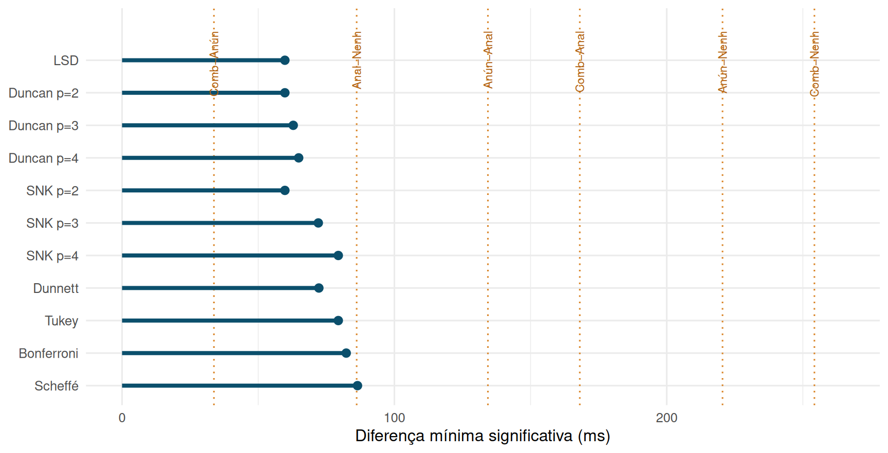
Figura 3.31: Diferença mínima significativa de cada procedimento (barras azuis) e as seis diferenças observadas entre médias (linhas pontilhadas laranja, rotuladas no topo). Um par é declarado diferente pelo procedimento quando sua linha pontilhada fica à direita do fim da barra.
| Par | Diferença | LSD sem proteção | LSD protegido | Duncan | SNK | Tukey | Bonferroni | Scheffé |
|---|---|---|---|---|---|---|---|---|
| Analytics − Nenhum | 86,2 | ≠ | ≠ | ≠ | ≠ | ≠ | ≠ | = |
| Anúncios − Nenhum | 220,5 | ≠ | ≠ | ≠ | ≠ | ≠ | ≠ | ≠ |
| Combo − Nenhum | 254,2 | ≠ | ≠ | ≠ | ≠ | ≠ | ≠ | ≠ |
| Anúncios − Analytics | 134,3 | ≠ | ≠ | ≠ | ≠ | ≠ | ≠ | ≠ |
| Combo − Analytics | 168,1 | ≠ | ≠ | ≠ | ≠ | ≠ | ≠ | ≠ |
| Combo − Anúncios | 33,7 | = | = | = | = | = | = | = |
Os procedimentos concordam em cinco dos seis pares: as diferenças grandes (acima de 130 ms) sobrevivem a qualquer correção, e Anúncios − Combo (33,7 ms) não é significativa por nenhum método. Toda a divergência está no par Analytics − Nenhum (86,2 ms), que cai entre a régua de Bonferroni (82,3 ms) e a de Scheffé (86,5 ms): é declarado diferente por LSD, Duncan, SNK, Dunnett, Tukey e Bonferroni, e só o Scheffé não o declara. O exemplo ilustra bem a hierarquia das réguas e o fato de que a escolha do procedimento só importa nos casos de fronteira — razão a mais para fixá-la no protocolo.
A Tabela 3.22 mostra o SNK aplicado passo a passo, com a regra de coerência: começa-se pela amplitude 4 (Combo − Nenhum); só porque ela foi significativa as amplitudes 3 são testadas, e só porque estas foram as vizinhas são testadas.
| Etapa | Par | Amplitude p | Diferença | DMS (SNK) | Decisão |
|---|---|---|---|---|---|
| 1 | Combo − Nenhum | 4 | 254,2 | 79,4 | ≠ |
| 2 | Anúncios − Nenhum | 3 | 220,5 | 72,1 | ≠ |
| 3 | Combo − Analytics | 3 | 168,1 | 72,1 | ≠ |
| 4 | Anúncios − Analytics | 2 | 134,3 | 59,8 | ≠ |
| 5 | Analytics − Nenhum | 2 | 86,2 | 59,8 | ≠ |
| 6 | Combo − Anúncios | 2 | 33,7 | 59,8 | = |
E a dependência da posição fica explícita imaginando uma diferença hipotética de 75 ms: pelo SNK ela seria significativa entre médias vizinhas (régua de 59,8 ms) ou separadas por uma média (72,1 ms), mas não entre os extremos (79,4 ms); por Tukey, a régua é 79,4 ms para qualquer posição, e os 75 ms nunca seriam significativos.
emm_scripts <- emmeans(mod_scripts, ~ config)
# todos os pares, três correções diferentes
pairs(emm_scripts, adjust = "tukey")## contrast estimate SE df t.ratio p.value
## Nenhum - Analytics -86.2 29.5 36 -2.922 0.0291
## Nenhum - Anúncios -220.5 29.5 36 -7.478 <0.0001
## Nenhum - Combo -254.2 29.5 36 -8.623 <0.0001
## Analytics - Anúncios -134.3 29.5 36 -4.556 0.0003
## Analytics - Combo -168.1 29.5 36 -5.701 <0.0001
## Anúncios - Combo -33.7 29.5 36 -1.144 0.6650
##
## P value adjustment: tukey method for comparing a family of 4 estimates## contrast estimate SE df t.ratio p.value
## Nenhum - Analytics -86.2 29.5 36 -2.922 0.0359
## Nenhum - Anúncios -220.5 29.5 36 -7.478 <0.0001
## Nenhum - Combo -254.2 29.5 36 -8.623 <0.0001
## Analytics - Anúncios -134.3 29.5 36 -4.556 0.0003
## Analytics - Combo -168.1 29.5 36 -5.701 <0.0001
## Anúncios - Combo -33.7 29.5 36 -1.144 1.0000
##
## P value adjustment: bonferroni method for 6 tests## contrast estimate SE df t.ratio p.value
## Nenhum - Analytics -86.2 29.5 36 -2.922 0.0511
## Nenhum - Anúncios -220.5 29.5 36 -7.478 <0.0001
## Nenhum - Combo -254.2 29.5 36 -8.623 <0.0001
## Analytics - Anúncios -134.3 29.5 36 -4.556 0.0009
## Analytics - Combo -168.1 29.5 36 -5.701 <0.0001
## Anúncios - Combo -33.7 29.5 36 -1.144 0.7282
##
## P value adjustment: scheffe method with rank 3# cada tratamento vs. o controle "Nenhum" (Dunnett)
contrast(emm_scripts, method = "trt.vs.ctrl", ref = "Nenhum", adjust = "dunnettx")## contrast estimate SE df t.ratio p.value
## Analytics - Nenhum 86.2 29.5 36 2.922 0.0167
## Anúncios - Nenhum 220.5 29.5 36 7.478 <0.0001
## Combo - Nenhum 254.2 29.5 36 8.623 <0.0001
##
## P value adjustment: dunnettx method for 3 tests# agrupamento compacto por letras (compact letter display)
multcomp::cld(emm_scripts, Letters = letters, adjust = "tukey")## config emmean SE df lower.CL upper.CL .group
## Nenhum 859 20.8 36 805 914 a
## Analytics 946 20.8 36 891 1000 b
## Anúncios 1080 20.8 36 1025 1135 c
## Combo 1114 20.8 36 1059 1168 c
##
## Confidence level used: 0.95
## Conf-level adjustment: sidak method for 4 estimates
## P value adjustment: tukey method for comparing a family of 4 estimates
## significance level used: alpha = 0.05
## NOTE: If two or more means share the same grouping symbol,
## then we cannot show them to be different.
## But we also did not show them to be the same.# Teste de Duncan (amplitude múltipla): fora do R base, via agricolae
duncan_scripts <- agricolae::duncan.test(mod_scripts, "config", console = FALSE)
duncan_scripts$groups # médias ordenadas + agrupamento por letras (Duncan)## tempo_ms groups
## Combo 1113.6160 a
## Anúncios 1079.8775 a
## Analytics 945.5325 b
## Nenhum 859.3801 c## Table CriticalRange
## 2 2.868158 59.79713
## 3 3.015218 62.86313
## 4 3.111132 64.86280# Dunnett unilateral: a pergunta do protocolo é "o script PIORA o tempo?"
g_uni <- glht(mod_scripts, linfct = mcp(config = "Dunnett"), alternative = "greater")
summary(g_uni)##
## Simultaneous Tests for General Linear Hypotheses
##
## Multiple Comparisons of Means: Dunnett Contrasts
##
##
## Fit: aov(formula = tempo_ms ~ config, data = dados_scripts)
##
## Linear Hypotheses:
## Estimate Std. Error t value Pr(>t)
## Analytics - Nenhum <= 0 86.15 29.48 2.922 0.00801 **
## Anúncios - Nenhum <= 0 220.50 29.48 7.478 < 0.001 ***
## Combo - Nenhum <= 0 254.24 29.48 8.623 < 0.001 ***
## ---
## Signif. codes: 0 '***' 0.001 '**' 0.01 '*' 0.05 '.' 0.1 ' ' 1
## (Adjusted p values reported -- single-step method)Dois detalhes desta saída merecem comentário. Primeiro, o par Analytics − Nenhum tem p ≈ 0,017 por Dunnett e p ≈ 0,029 por Tukey: Dunnett corrige para três comparações (só contra o controle), Tukey para seis. Se a pergunta do protocolo é apenas “cada script piora em relação a nenhum?”, pagar por seis comparações é desperdiçar poder. Segundo, na versão unilateral o p-valor desse par cai para cerca de metade — legítimo aqui porque nenhum script de terceiros acelera uma página e a direção foi fixada antes da coleta; escolher “unilateral” depois de ver o sinal da diferença seria mais uma forma de data snooping.
O agrupamento de Duncan reaparece na coluna groups acima: neste conjunto de dados, ele coincide
com o cld() de Tukey exibido antes (mesma partição em três grupos), porque os efeitos de
configuração são grandes o bastante para que até o critério mais rigoroso de Tukey já os separe.
A diferença entre os dois métodos fica visível justamente nos casos de fronteira — pares cuja
diferença observada fica entre o valor crítico mais liberal de Duncan para aquela amplitude e o
valor crítico único, mais conservador, de Tukey (aqui, entre 59,8 e
79,4 ms para vizinhas); nesses casos, e só neles, Duncan declara significativo um par
que Tukey não declara.
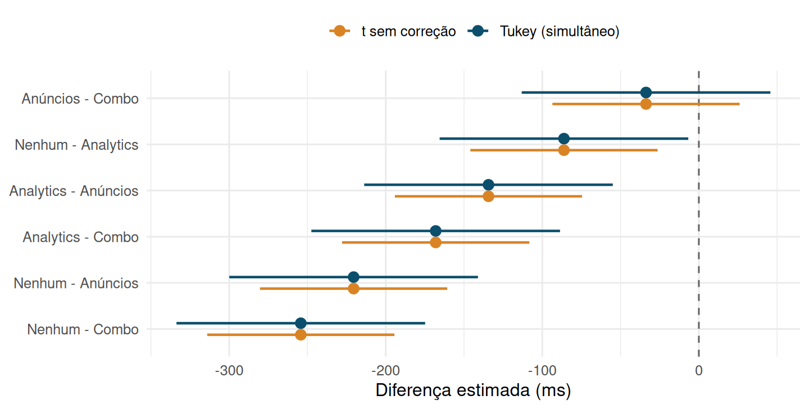
Figura 3.32: Intervalos de confiança de 95% para as seis diferenças entre médias: simultâneos de Tukey (azul) e individuais, sem correção (laranja). Um par difere quando o intervalo não cruza o zero (linha tracejada).
Os intervalos de Tukey são 33% mais largos que os individuais: é o preço de a garantia de 95% valer para os seis ao mesmo tempo. Só “Anúncios − Combo” cruza zero nos dois casos, confirmando o \(SQ_{L_3}\) não significativo da partição por contrastes ortogonais.
3.7.14 Agrupamento de tratamentos (compact letter display)
Uma forma compacta de reportar o resultado de comparações múltiplas par a par é atribuir letras
às médias: tratamentos que compartilham pelo menos uma letra não diferem significativamente
entre si; tratamentos sem letra em comum diferem. Essa representação (compact letter display,
CLD) é extremamente comum em tabelas de resultados agronômicos e biológicos. As letras em si são
arbitrárias — o cld() do multcomp começa pela menor média, o agricolae pela maior —; o que
importa é se há letra em comum. A Figura 3.33 é a forma de relatório: dados,
médias com intervalo e letras de Tukey numa só figura.
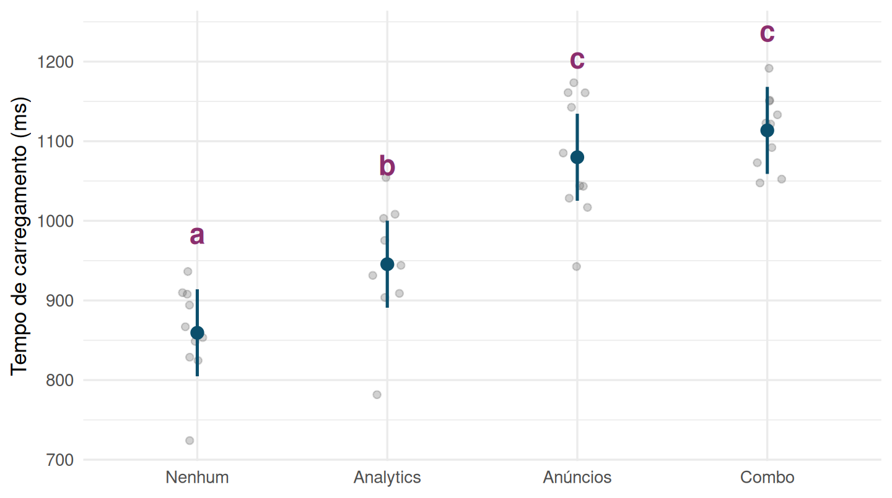
Figura 3.33: Tempos individuais (cinza), médias com IC de 95% (azul) e letras do agrupamento de Tukey: configurações com letra em comum não diferem a 5% (FWER).
O CLD tem, porém, um defeito conhecido: um tratamento pode receber duas letras (“ab”), ficando “igual” a dois grupos que são diferentes entre si — o que não é ambiguidade dos dados, e sim do procedimento, que testa pares e depois tenta resumir os resultados em grupos. Veremos isso acontecer nos dados de cafeína, na próxima seção.
3.7.15 Scott-Knott: grupos que não se sobrepõem
O método de Scott e Knott (1974) ataca o problema por outro caminho: em vez de testar pares, particiona o conjunto de médias ordenadas em grupos disjuntos, por um critério de máxima verossimilhança. O algoritmo é recursivo: (1) ordenar as \(k\) médias; (2) entre as \(k-1\) bipartições possíveis que respeitam a ordem, achar a que maximiza a soma de quadrados entre os dois grupos, \(B_0\); (3) testar se \(B_0\) é grande demais para ser acaso, pela estatística
\[\lambda=\frac{\pi}{2(\pi-2)}\cdot\frac{B_0}{\hat\sigma_0^2} \;\dot\sim\; \chi^2_{\,k/(\pi-2)}, \qquad \hat\sigma_0^2=\frac{\sum_i n_i(\bar y_i-\bar y)^2+\nu\,QME}{k+\nu};\]
- se for, dividir e repetir o procedimento em cada parte. O algoritmo cabe em poucas linhas:
sk <- function(med, n_i, QME, gl, alpha = 0.05) {
grupo <- rep(1L, length(med)); prox <- 2L
parte <- function(idx) {
if (length(idx) < 2) return(invisible(NULL))
m_ <- med[idx]; n_ <- n_i[idx]; k <- length(idx)
B0 <- sapply(1:(k - 1), function(j) {
T1 <- sum(n_[1:j] * m_[1:j]); T2 <- sum(n_[(j+1):k] * m_[(j+1):k])
T1^2 / sum(n_[1:j]) + T2^2 / sum(n_[(j+1):k]) - (T1 + T2)^2 / sum(n_)
})
j <- which.max(B0)
s2_0 <- (sum(n_ * (m_ - mean(m_))^2) + gl * QME) / (k + gl)
lambda <- (pi / (2 * (pi - 2))) * max(B0) / s2_0
if (lambda > qchisq(1 - alpha, k / (pi - 2))) { # divide e recorre
novos <- idx[(j+1):k]; grupo[novos] <<- prox; prox <<- prox + 1L
parte(idx[1:j]); parte(novos)
}
}
parte(seq_along(med)); grupo
}
med_ord <- sort(medias); g_sk <- sk(med_ord, ns[names(med_ord)], qme, gl_erro)
tibble(`Configuração` = names(med_ord), `Média (ms)` = round(med_ord, 1),
`Scott-Knott` = LETTERS[match(g_sk, unique(g_sk))])## # A tibble: 4 × 3
## Configuração `Média (ms)` `Scott-Knott`
## <chr> <dbl[1d]> <chr>
## 1 Nenhum 859. A
## 2 Analytics 946. B
## 3 Anúncios 1080. C
## 4 Combo 1114. CTrês grupos disjuntos, os mesmos de Tukey aqui. O pacote ScottKnott (função SK()) devolve o
mesmo resultado; implementá-lo à mão é deliberado, para que a lógica de partição fique visível.
3.7.16 Ordenamento como pergunta: quem é o mais lento?
A ordem observada das médias é Combo > Anúncios > Analytics > Nenhum. Com que segurança se pode dizer que o Combo é a configuração mais lenta? Uma forma simples de responder é tratar as médias verdadeiras como incertas, com \(\mu_i \sim N(\bar y_{i\cdot}, QME/n)\) — uma aproximação de bootstrap paramétrico (ou a posteriori com priori plana) —, sortear muitas vezes as quatro médias e registrar a posição de cada configuração no ranking.
set.seed(11)
sim_m <- sapply(medias, function(mu) rnorm(10000, mu, sqrt(qme / 10)))
pos <- t(apply(-sim_m, 1, rank)) # posição 1 = mais lenta
prob_rank <- map_dfr(colnames(pos), function(cfg)
tibble(config = cfg, posicao = 1:4, prob = sapply(1:4, function(k) mean(pos[, cfg] == k))))
ggplot(prob_rank, aes(factor(posicao), factor(config, levels = rev(names(medias))), fill = prob)) +
geom_tile(color = "white") + geom_text(aes(label = scales::percent(prob, 1)), size = 4.2) +
scale_fill_gradient(low = "white", high = "#0B4F6C", guide = "none") +
labs(x = "Posição no ranking (1 = mais lenta)", y = NULL) + theme_minimal(base_size = 12)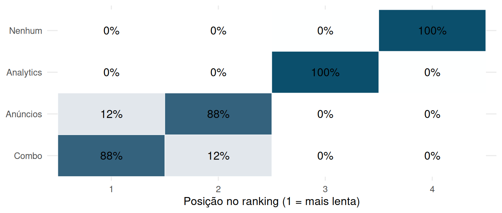
Figura 3.34: Probabilidade aproximada de cada configuração ocupar cada posição no ranking de tempo de carregamento (1 = mais lenta), obtida sorteando 10.000 vezes as médias de N(média observada, QME/n).
Nenhum é a mais rápida e Analytics a segunda com probabilidade praticamente 1. Mas o Combo é o mais lento em só cerca de 88% dos sorteios: a ordem entre Combo e Anúncios não é sustentada pelos dados, o mesmo que dizem Tukey, o contraste \(L_3\) e o intervalo de confiança da diferença. O ranking que os dados permitem é parcial: Nenhum < Analytics < {Anúncios, Combo}.
3.7.17 Quanto custa ser liberal: o FWER simulado
A discussão sobre quem controla o FWER e em que condições fica concreta com uma simulação. Repetimos 2.000 vezes um experimento com o mesmo desenho (\(t = 4\), \(n = 10\), \(\sigma = 70\) ms) em dois cenários: \(H_0\) completa (quatro médias iguais) e \(H_0\) parcial (duas configurações iguais entre si, outras duas iguais entre si, com 200 ms entre os pares). Em cada repetição registramos se algum par de médias verdadeiramente iguais foi declarado diferente.
fwer_sim <- function(mu, n = 10, sigma = 70, B = 2000) {
t <- length(mu); pares <- combn(t, 2); nulos <- mu[pares[1, ]] == mu[pares[2, ]]
rowMeans(replicate(B, {
y <- matrix(rnorm(n * t, rep(mu, each = n), sigma), n)
sapply(decide_pares(colMeans(y), mean(apply(y, 2, var)), n, t * (n - 1)),
function(d) any(d[nulos]))
}))
}
set.seed(2027)
fw <- bind_rows(
enframe(fwer_sim(c(0, 0, 0, 0)), "metodo", "fwer") %>% mutate(cenario = "H0 completa: 4 médias iguais"),
enframe(fwer_sim(c(0, 0, 200, 200)), "metodo", "fwer") %>%
mutate(cenario = "H0 parcial: 2 pares iguais, 200 ms entre pares"))
ggplot(fw, aes(fwer, factor(metodo, levels = rev(names(dec))))) +
geom_col(fill = "#0B4F6C", width = 0.65) +
geom_vline(xintercept = 0.05, color = "#d98324", linetype = "dashed") +
geom_text(aes(label = scales::percent(fwer, 0.1, decimal.mark = ",")), hjust = -0.15, size = 3.3) +
facet_wrap(~ cenario) + scale_x_continuous(labels = scales::percent, limits = c(0, 0.25)) +
labs(x = "FWER simulado", y = NULL) + theme_minimal(base_size = 11)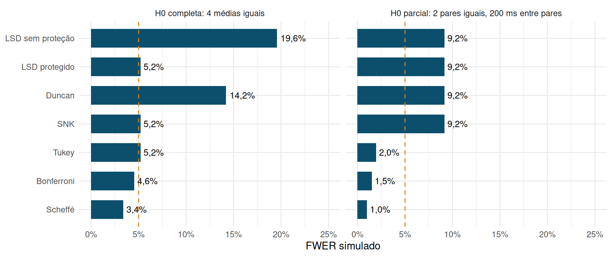
Figura 3.35: Taxa de erro por família (FWER) estimada em 2.000 repetições do experimento para cada procedimento, sob H0 completa (esquerda) e sob H0 parcial (direita). A linha tracejada marca o nível nominal de 5%.
O resultado organiza toda a discussão anterior. Sob \(H_0\) completa, os testes \(t\) sem correção erram em 20% das repetições e o Duncan em 14% (o valor teórico é \(\alpha_4 \approx 14{,}3\%\)), enquanto LSD protegido, SNK e Tukey ficam em torno de 5% e Bonferroni e Scheffé abaixo disso. Sob \(H_0\) parcial, porém, LSD protegido e SNK sobem para 9%: o \(F\) global é sempre significativo (há 200 ms entre os pares), de modo que a “proteção” desaparece, e os dois pares de médias iguais, que ficam vizinhos na ordenação, são testados cada um ao nível de 5% — \(1-0{,}95^2 \approx 9{,}75\%\). Tukey, Bonferroni e Scheffé ficam abaixo de 5% nos dois cenários: é isso que significa “controlar o FWER em sentido forte”.
3.7.18 Data snooping na prática
Suponha agora que a comparação Analytics − Nenhum não estivesse no protocolo: alguém olhou a Figura 3.18 e decidiu testá-la. A régua honesta para um contraste sugerido pelos dados é a de Scheffé.
L_an <- medias["Analytics"] - medias["Nenhum"]; t_an <- unname(L_an / sqrt(2 * qme / 10))
c(t_obs = t_an, t_crit_planejado = qt(0.975, 36), t_crit_Scheffe = sqrt(3 * qf(0.95, 3, 36)))## t_obs t_crit_planejado t_crit_Scheffe
## 2.921968 2.028094 2.932370c_snoop <- c(1, 1, -1, -1) / 2 # "sem anúncio" vs. "com anúncio", também sugerido pelo gráfico
abs(sum(c_snoop * medias)) / sqrt(qme * sum(c_snoop^2) / 10)## [1] 9.319104Como contraste planejado, \(t = 2{,}92\) passaria folgado do valor crítico 2,03; como contraste sugerido pelos dados, o critério de Scheffé exige 2,93, e o par fica por um fio abaixo dele. Já o contraste “sem anúncio vs. com anúncio”, também inspirado pelo gráfico, dá \(t = 9{,}3\) e passa por qualquer régua. A lição é geral: efeitos grandes não precisam de planejamento para sobreviver a uma correção honesta; os de fronteira, sim.
3.7.19 O que as comparações múltiplas respondem nestes dados
- Quais configurações diferem entre si? Todas, exceto Anúncios e Combo (Tukey, FWER de 5%). A conclusão sobre Analytics × Nenhum depende do procedimento: só o Scheffé não a sustenta.
- Cada script piora em relação a nenhum? Sim, os três (Dunnett): Analytics +86 ms, Anúncios +220 ms, Combo +254 ms.
- É possível ordenar as quatro configurações? Só parcialmente: Nenhum < Analytics < {Anúncios, Combo}; afirmar que “o Combo é o pior” não é sustentado.
- Que procedimento reportar? O que responde à pergunta do protocolo — Dunnett para “contra o controle”, Tukey para “todos os pares”. Reportar o procedimento que produziu mais asteriscos é data snooping de procedimento.
- Por que faz sentido usar Dunnett (não Tukey) quando a única pergunta de interesse é "cada configuração aumenta o tempo de carregamento em relação a não usar nenhum script?" E por que, nesse caso, a versão unilateral é legítima?
- Um pesquisador roda a ANOVA, olha os dados, percebe uma diferença "interessante" entre dois grupos que não tinha planejado comparar, e testa essa diferença com um teste $t$ comum. Por que isso viola as premissas por trás de todos os procedimentos desta seção, mesmo que o p-valor reportado pareça pequeno? O que muda se ele usar Scheffé?
- O contraste $L_3$ (Anúncios contra Combo) não foi significativo, e um gerente conclui que "o chat não custa nada". O que você responderia, usando o intervalo de confiança de $L_3$ e o cálculo de tamanho amostral?
- Os três contrastes "cada script contra Nenhum" somaram mais que $SQ_{Trat}$. Isso indica um erro de conta? O que representa a soma "a mais"?
- Na simulação, LSD protegido e SNK controlaram o FWER sob $H_0$ completa, mas não sob $H_0$ parcial. Explique o mecanismo, com base no teste $F$ preliminar e na regra de coerência.
- O teste de Duncan é mais liberal que Tukey porque usa um nível de proteção $\alpha_p$ que cresce com a amplitude $p$ da comparação, em vez de manter $\alpha$ fixo. Isso é uma vantagem ou uma desvantagem? Em que tipo de publicação você esperaria ver Duncan preferido a Tukey, apesar de sua FWER não controlada?